| SOURCE | TITLE| IMAGE MATCH | click to source page |
| eBay | Handstamped Art, Artists Japanese Stamps for sale | eBay | 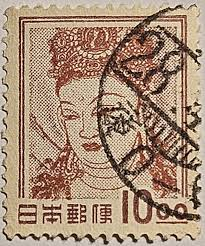 |
| eBay | Japan 1953 - Mihon Overprint - Specimen Overprint (535) Mint never Hinged | eBay | 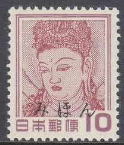 |
| Etsy | 1953 Kannon Stamp Japan - Postage Stamp Jewelry - Vintage Postage Stamp Necklace - Antique Bronze - Etsy | 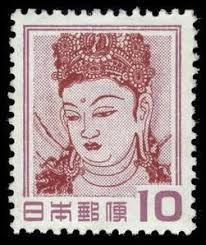 |
| Richter Stamps | Japan – Richter Stamps | 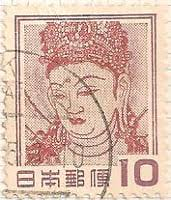 |
| eBay | Japanese Space Stamps for sale | eBay | 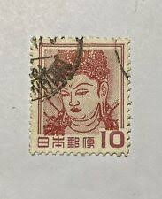 |
| Colnect | Japan : Stamps [Year: 1959] [1/4] : Colnect 📮 | 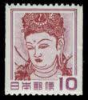 |
| eBay | JAPAN #580 Goddess Kannon Stamps - 100 USED | eBay | 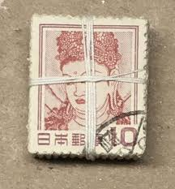 |
| HipStamp | Search "Japan 1953" in Asia / HipStamp | 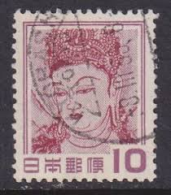 |
| Dreamstime.com | Wallpainting Woman Stock Photos - Free & Royalty-Free Stock Photos from Dreamstime | 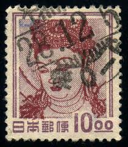 |
| eBay | Japan definitive 1959 10y MNH SAKURA371 | eBay | 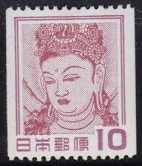 |
| Dreamstime.com | Japanese 1950 Stock Photos - Free & Royalty-Free Stock Photos from Dreamstime | 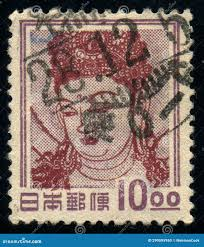 |
| eBay | JAPAN Sc#672 Coil 1959 Kannon Wall Painting MNH | eBay | 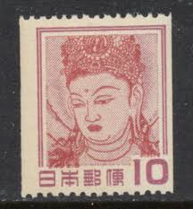 |
| eBay | Japan - 1952 Chubu-Sangaku National Park - Kannon Bosatsu | eBay | 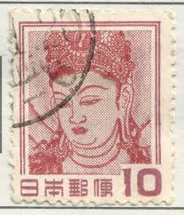 |
| Amazon Web Services | JAPAN 1959 10 yen Definitive Stamps, | | 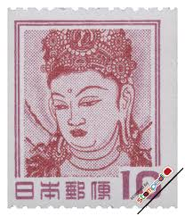 |
| Dreamstime.com | 215 Yen Stamp Stock Photos - Free & Royalty-Free Stock Photos from Dreamstime | 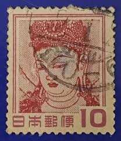 |
| eBay | JAPAN #516, Mint Never Hinged, Scott $27.50 | eBay | 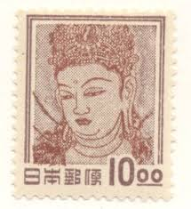 |
| Shutterstock | Japanese Stamps: Over 6,665 Royalty-Free Licensable Stock Photos | Shutterstock | 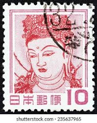 |
| Etsy | Kannon Goddess Vintage Poster: Red Japan Stamp Fine Art Print - Etsy Ireland | 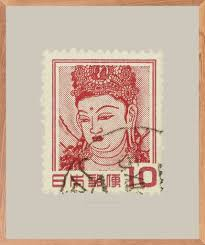 |
| eBay | Japan 1950-52 10y Goddess Stamp #516 MNH CV $27.50 | eBay | 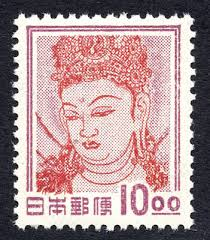 |
| HipStamp | Search "Japan 1953" in Topicals / HipStamp | 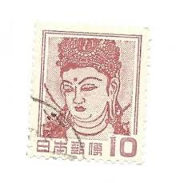 |
| Shutterstock | Japan Circa 1930 Stamp Printed Japan Stock Photo 103993850 | Shutterstock | 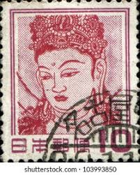 |
| HipStamp | Search "Japan 1953" in Topicals / HipStamp | 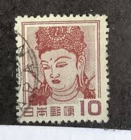 |
| Dreamstime.com | Stamps Nara Stock Photos - Free & Royalty-Free Stock Photos from Dreamstime | 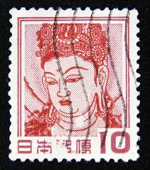 |
| HipStamp | Japan #580 10y Goddess Kannon | Asia - Japan, General Issue Stamp / HipStamp | 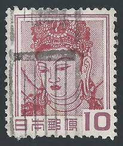 |
| HipStamp | Japan 516 Used | Asia - Japan, General Issue Stamp / HipStamp | 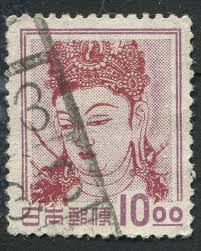 |
| Stampedia | JAPAN 1951 10 yen Definitive Stamps, | Goddess Kannon | 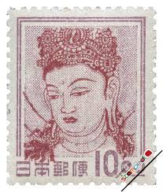 |
| eBay | 516 Japan MH - CAT $25.00 - Stamp | eBay | 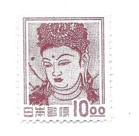 |
| postcardsfromsanantonio.com | Japanese woodblock prints at Blanton reflect 'Floating World' values – Postcards from Barton Springs | 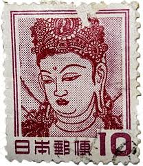 |
| Adnan Kazli (adnankazli) - Profile | Pinterest | 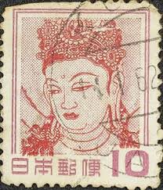 | |
| eBay | Foreign Stamp Japan 10c Used - #7128 | eBay | 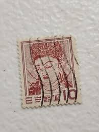 |
| Dreamstime.com | Postage Stamp Printed in Japan Shows Keiki-doji“ in Kongobu-Temple, Fauna, Flora and Cultural Heritage Serie, Circa 1984 Editorial Stock Image - Image of cultural, hobby: 163376174 | 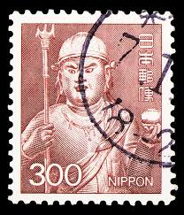 |
| eBay | Japan 1954 Sc # 580a Booklet stamp Single Used Very Fine | eBay | 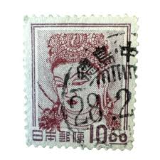 |
| Shutterstock | 20 Delivery Dharma Royalty-Free Images, Stock Photos & Pictures | Shutterstock | 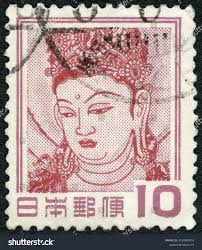 |
| Alamy | MOSCOW, RUSSIA - MAY 16, 2018: A stamp printed in Japan shows Kannon Bosatsu (Wall Painting) - Kondo Hall, Nara, Fauna, Flora and National Treasures Stock Photo - Alamy | 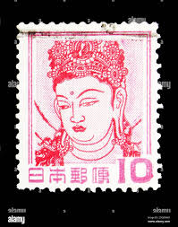 |
| ohanstamps.com | Goddess Kannon | OhanStamps | 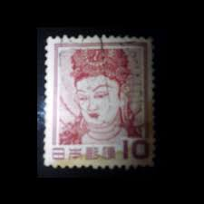 |
| eBay | Japan: 1984-87. SC # 1633, set of 1 used. Lot # 07-00 | eBay | 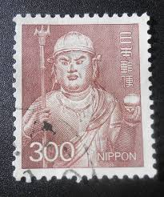 |
| Shutterstock | Japan -circa 1954 Stamp Printed Japan Stock Photo 91695332 | Shutterstock | 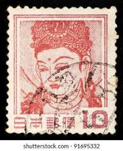 |
| eBay | Japan Stamp Scott #672 Goddess Kannon 1959 | eBay | 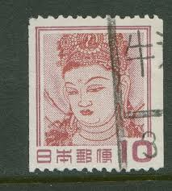 |
| Dreamstime.com | Postage Stamp with Vintage Illustration of Thylacine Tasmanian Tiger Extinct Animal Editorial Photo - Image of post, extinct: 359439046 | 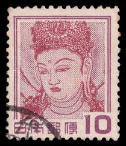 |
| Dreamstime.com | India Postage Stamp Shows God Shiva, Circa 1929 Editorial Photo - Image of canceled, postage: 99557066 | 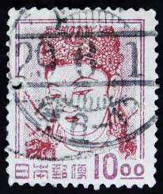 |
| World Buddhist Stamps Gallery | Keiki-doji“ :: World Buddhist Stamps Gallery | 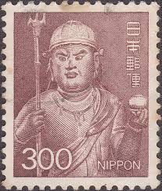 |
| eBay | Japan Stamp Scott #580 Used on Piece with Town Cancel - 10y Goddess Kannon Issue | eBay | 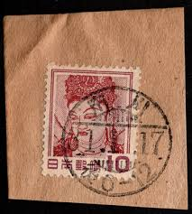 |
| HipStamp | Japan Scott# 580 used single | Asia - Japan, General Issue Stamp / HipStamp | 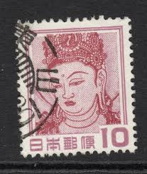 |
| Shutterstock | China Circa 1939 Cancelled Postage Stamp Stock Photo 2702944509 | Shutterstock | 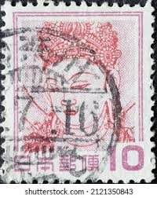 |
| BidCurios | 1954 Japan 10 Yen "Guanyin" Used stamp - BidCurios | 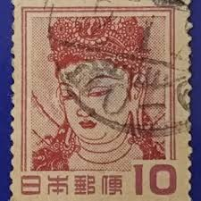 |
| Merlion Asia stamp club (fdc and postal stationary) | Facebook | 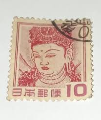 | |
| eBay | Japan - 1929 - Definitive Issue - Kannon Bosatsu - 50¢ - #2392 | eBay | 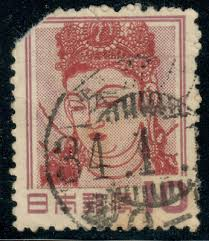 |
| Shutterstock | Chinese Red Stamps: Over 2,258 Royalty-Free Licensable Stock Photos | Shutterstock | 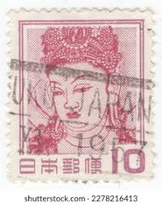 |
| Japan 100 Yen 1953 Issue VF Condition Price : ₹200 Shipping : ₹50 | 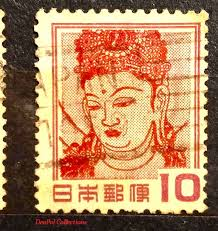 | |
| Japan 🇯🇵 1969 Kongo-Rikishi : r/philately | 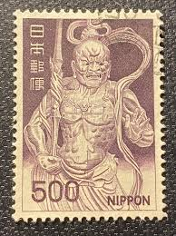 | |
| Alamy | Stamp from japan hi-res stock photography and images - Alamy | |
| UNC.UA | Philately - buy stamps and envelopes from Japan at an auction for collectors UNC.UA | |
| Stamp Collecting Blog | Definitive postage stamps of Japan: “Animal, plant and national treasure” series | |
| Alamy | old japanese postage stamp in studio setting Stock Photo - Alamy | |
| eBay | Foreign 10c Stamp Used - #A776 | eBay | |
| eBay | Vintage Postage Stamp Japan ca. 1951 Buddha Guanyin | eBay | |
| Vinyltribes | Zo5 Aura - Away | |
| Shutterstock | China Circa 1988 Stamp Printed China Stock Photo 73220845 | Shutterstock | |
| Dreamstime.com | Kannon Bosatsu (pittura) Della Parete - Serie Di Kondo Corridoio, Di Nara, Di Fauna, Della Flora E Dei Tesori Nazionali (1952-68) Immagine Editoriale - Immagine di circa, posta: 140382055 | |
| Shutterstock | 6+ Hundred Postage Venere Royalty-Free Images, Stock Photos & Pictures | Shutterstock |